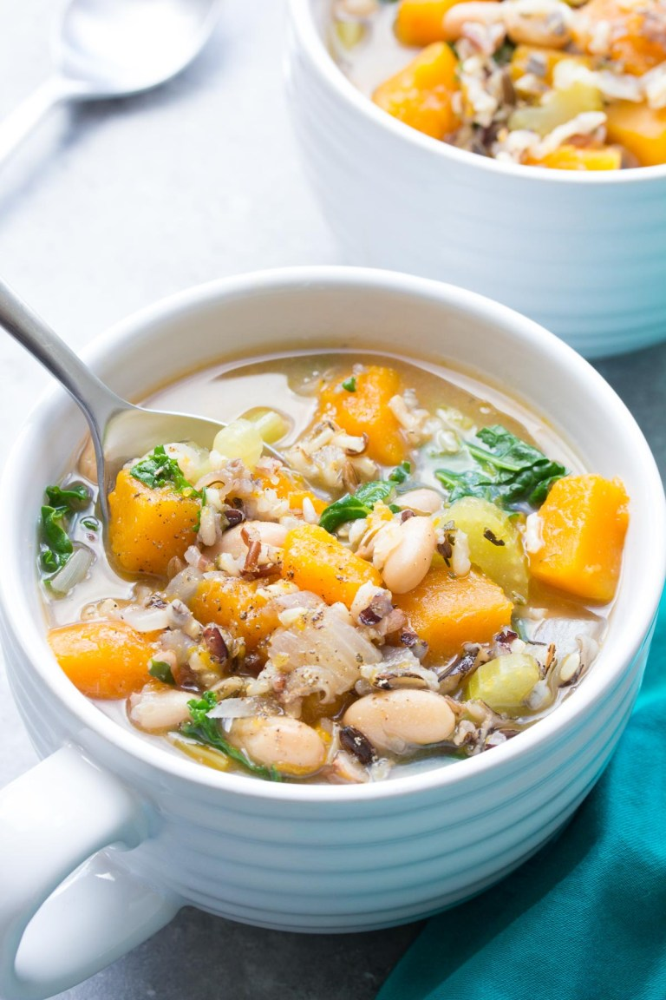

Butternut Squash and Wild Rice Soup

Description
This is easily one of my favourite slow cooker recipes. So easy to prepare and toss into a slow cooker. Wait 6 hours and Voila!
Super hearty and filling with a wonderful sweetness provided by the squash.
Ingredients
- 1 diced onion
- 1 cup of uncooked wild rice
- 1 diced butternut squash
- 15 ounce can of white beans (rinsed and drained)
- 4 ribs of celery chopped
- 6 cups of vegetable broth
- Seasonings: 1/2 tsp dried oregano, 1/2 tsp dried thyme, 1/2 tsp garlic powder, 1/2 tsp salt, 1/2 tsp ground black pepper, 1 bay leaf
- 6 cups of chopped kale
Steps
- Add all ingredients to the slow cooker except for the kale and broth.
- Add the broth and stir everything in.
- Cook on low for about 6 hours, or until the rice is cooked and tender.
- Remove the bay leaf.
- Stir in the kale.
- Enjoy!